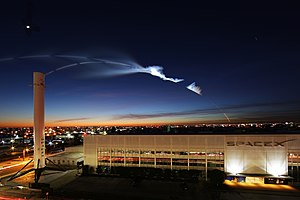
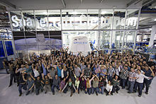
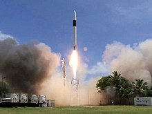

Space Exploration Technologies Corporation (SpaceX) adalah perusahaan transportasi luar angkasa
swasta Amerika
Serikat
yang didirikan oleh Elon Musk. Perusahaan ini telah mengembangkan keluarga roket Falcon dengan tujuan menjadi
kendaraan
peluncuran yang dapat dipakai ulang. SpaceX juga mengembangkan wahana antariksa SpaceX Dragon untuk mengirim
suplai
dan
pergantian awak Stasiun Luar Angkasa Internasional.
Perusahaan ini didirikan pada tanggal 6 Mei 2002 oleh seorang pengusaha bernama Elon Musk. Awalnya perusahaan
ini
berbasis di El Segundo, SpaceX kini beroperasi di Hawthorne, California.
Beberapa pencapaian yang diraih SpaceX yaitu Roket swasta berbahan bakar cair pertama yang mencapai orbit
(roket
Falcon
1 tahun 2008), perusahaan swasta pertama yang meluncurkan wahana antariksa menuju orbit, dan mendaratkannya
kembali
(Dragon tahun 2010), perusahaan swasta pertama yang mengirim wahana antariksa menuju Stasiun Luar Angkasa
Internasional
(Dragon tahun 2012), mendaratkan roket kelas orbital dengan metode "propulsive landing" untuk pertama kalinya
(Falcon
9
tahun 2015), peluncuran kembali roket kelas orbital untuk pertama kalinya (Falcon 9 tahun 2017), perusahaan
pertama
yang
mengirim sebuah objek menuju orbit matahari (Tes peluncuran roket Falcon Heavy yang membawa sebuah mobil Tesla
Roadster
tahun 2018), dan perusahaan swasta pertama untuk mengirim astronot ke orbit dan ke Stasiun Luar Angkasa
Internasional
(misi SpaceX Crew Dragon Demo-2 dan SpaceX Crew-1 pada tahun 2020). Sampai 6 Desember 2020, SpaceX telah
mengirim 21
misi suplai ke Stasiun Luar Angkasa Internasional di bawah kontrak dengan NASA. SpaceX juga telah
menandatangani
kontrak
dengan NASA untuk melakukan pergantian awak Stasiun Luar Angkasa Internasional yang akan dilakukan mulai tahun
2019.
SpaceX sedang mengembangkan konstelasi satelit internet besar bernama Starlink. Pada Januari 2020, perusahaan
ini
menjadi operator konstelasi satelit komersial terbesar di dunia. SpaceX juga mengembangkan Starship, sistem
peluncuran
super berat yang didanai secara mandiri untuk penerbangan luar angkasa antarplanet. Sistem ini dimaksudkan
untuk
menjadi
kendaraan orbital SpaceX utama setelah beroperasi, menggantikan wahana antariksa Falcon 9 dan Dragon. Starship
direncanakan dapat digunakan kembali sepenuhnya dan akan menjadi roket terbesar yang pernah ada dalam
debutnya, yang
dijadwalkan pada awal dekade 2020-an.

Kantor pusat SpaceX pada Desember 2017; kepulan asap dari sebuah Falcon 9 terlihat di atasnya
History
Pada tahun 2001, Elon Musk membuat konsep Mars Oasis, sebuah proyek untuk mendaratkan miniatur rumah kaca
eksperimental
dan menanam tanaman di Mars. Dia mengumumkan bahwa proyek tersebut akan menjadi perjalanan "terjauh yang
pernah dijalani
oleh kehidupan manapun" dalam upaya untuk mendapatkan kembali minat publik dalam eksplorasi ruang angkasa dan
meningkatkan anggaran NASA. Musk mencoba membeli roket murah dari Rusia tetapi kembali dengan tangan kosong
setelah gagal menemukan roket dengan harga yang terjangkau.
Dalam penerbangan pulang, Musk menyadari bahwa dia dapat memulai perusahaan yang dapat membuat roket
terjangkau yang dia
butuhkan. Menurut investor awal Tesla dan SpaceX, Steve Jurvetson, Musk menghitung bahwa biaya bahan mentah
untuk
membuat roket hanya 3% dari harga jual roket pada saat itu. Dengan menerapkan integrasi vertikal, memproduksi
sekitar
85% perangkat keras peluncuran di perusahaannya sendiri, dan pendekatan modular rekayasa perangkat lunak
modern,
Musk yakin SpaceX dapat memotong harga peluncuran hingga sepuluh kali lebih murah dan masih menikmati margin
kotor
sebesar 70%.
Pada awal 2002, Musk mulai mencari staf untuk perusahaan antariksa barunya, yang segera diberi nama SpaceX.
Musk
mendekati insinyur roket Tom Mueller (kemudian menjadi CTO propulsi SpaceX), dan mengundangnya untuk menjadi
mitra
bisnisnya. Mueller setuju untuk bekerja untuk Musk, dan lahirlah SpaceX. SpaceX pertama kali berkantor pusat
di
sebuah gudang di El Segundo, California. Hingga November 2005, perusahaan memiliki 160 karyawan.
Musk telah menyatakan bahwa salah satu tujuannya dengan SpaceX adalah untuk mengurangi biaya dan meningkatkan
keandalan
akses ke luar angkasa, yang pada akhirnya sepuluh kali lebih murah. Musk juga menyatakan bahwa dia ingin
membuat
perjalanan luar angkasa tersedia untuk "hampir semua orang".

Karyawan SpaceX dengan kapsul Dragon di markas SpaceX di Hawthorne, California, Februari 2015
First Mission
SpaceX mengembangkan kendaraan peluncuran orbital pertamanya, Falcon 1, dengan pendanaan swasta. Falcon 1
adalah kendaraan peluncuran kecil dua tingkat ke orbit sekali pakai. Total biaya pengembangan Falcon 1 sekitar
US$90
juta.
Pada tahun 2005, SpaceX mengumumkan rencana untuk mengejar program luar angkasa komersial yang dinilai
manusia hingga
akhir dekade ini, sebuah program yang nantinya akan menjadi wahana antariksa Dragon. Pada tahun 2006, NASA
mengumumkan bahwa perusahaan tersebut adalah salah satu dari dua perusahaan yang dipilih untuk memberikan
kontrak
demonstrasi pasokan kembali awak dan kargo kepada ISS di bawah program COTS.
Dua peluncuran Falcon 1 pertama dibeli oleh Departemen Pertahanan Amerika Serikat di bawah program yang
mengevaluasi
kendaraan peluncuran AS baru yang cocok untuk digunakan oleh DARPA. Tiga peluncuran roket pertama, antara
tahun 2006 dan 2008, semuanya mengakibatkan kegagalan. Peluncuran sukses pertama dicapai pada 28 September
2008. Falcon
1 dihentikan setelah peluncuran keduanya yang sukses pada Juli 2009, untuk memungkinkan SpaceX fokus pada
pengembangan
roket orbital yang lebih besar, Falcon 9.

Peluncuran Falcon 1 pertama yang sukses pada September 2008